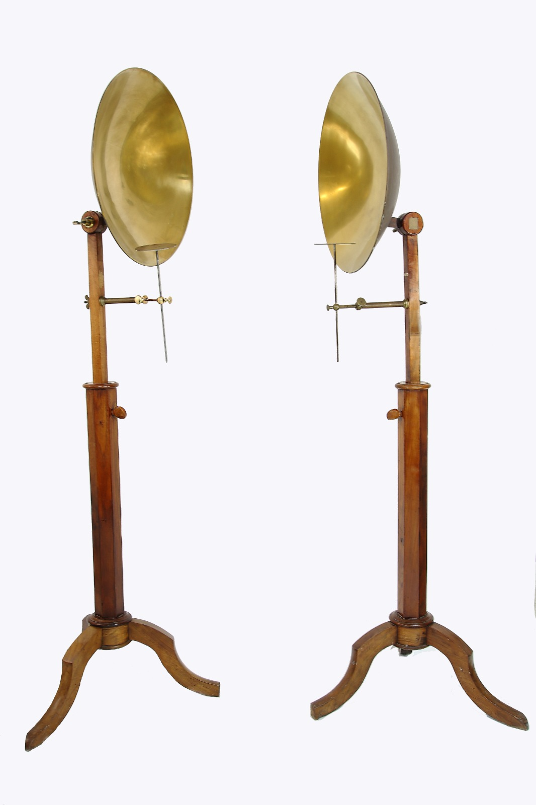

Specchi coniugati
Scuola di provenienza: Liceo Classico "P. Colletta", Avellino
Settore: Ottica
Costruttori: Sconosciuto
Materiali: Legno, ferro e ottone
Accessori: Nessuno
Stato di conservazione: Buono
Descrizione: L’esperienza degli specchi coniugati è attribuita generalmente al signor Pictet di Ginevra. Si pongono, affacciati l’uno all’altro sul medesimo asse ed a una distanza abbastanza grande, due specchi sferici; al fuoco principale di uno di questi specchi si dispone del carbone acceso, ed al fuoco dell’altro, un corpo assai combustibile; dell’esca, o del fulmicotone, per esempio. Se, per mezzo di un soffietto, si attiva la sorgente calorifica, si vede, dopo poco tempo, infiammarsi l’esca. Con specchi di 35 cm di diametro, l’esperienze può eseguirsi agevolmente ad una distanza di 10 metri. L’esperienza si spiega facilmente. I raggi partiti dal fuoco principale, dove si trova il corpo caldo, si riflettono parallelamente all’asse comune dei due specchi, e vanno dopo la riflessione, ad incontrarsi al fuoco del secondo specchio , dove si trova il corpo combustibile. Il volume considerevole della sorgente calorifica impiegata può far supporre assai poco precisa l’esperienza; ma bisogna osservare, come non è che una piccola porzione di questa sorgente che agisce effettivamente; le altre parti sono semplicemente destinate a produrre una temperatura sufficientemente elevata nei punti di azione efficace. D’altra parte, l’immagine di questa sorgente di calore, è estremamente piccola, ed è al punto dove essa si forma che si deve collocare il corpo combustibile. L’esperienza per poter riuscire, deve essere regolata con molta precisione; essa dunque costituisce effettivamente una dimostrazione sufficientemente rigorosa delle leggi della riflessione, che ne costituiscono il principio teorico. Questi specchi possono anche dimostrare la riflessione del suono. Si sospende in uno dei fuochi dei due specchi concavi un orologio da tasca; una persona collocata al fuoco dell’altro specchio, o, meglio ancora, onde non intercettare le onde dirette, pone al fuoco stesso il padiglione di un cornetto acustico, per mezzo del quale si può udire distintamente il rumore del bilanciere dell’orologio, e ciò anche quando gli specchi si trovano a parecchi metri di distanza fra loro.